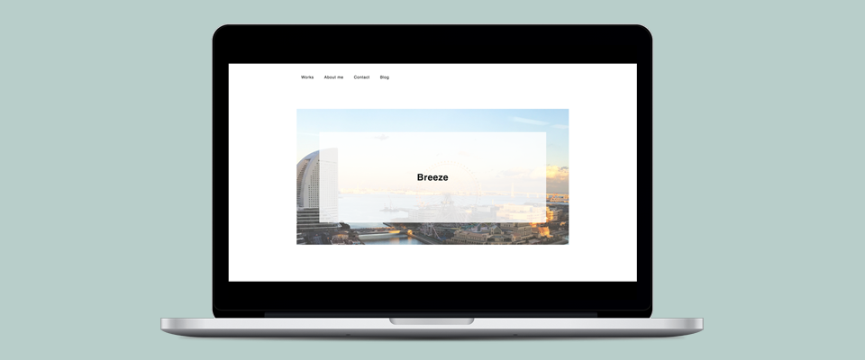

Breeze
制作期間：3週間
使用ツール：Adobe Photoshop CC / Atom / iPhone7
このポートフォリオ制作の目的は、ポートフォリオを閲覧してくださった(特に採用担当者の)方に対して、
- どの程度のスキルを保持しているのか
- どの程度の制作物を作成することが出来るのか
- 今まで何をしてきたのか(人となり)
を説明し、伝えるためのサイトです。また、ポートフォリオをスムーズに閲覧出来るよう、下記要素を意識して制作を進めました。
- サイト内の要素を中央に寄せ、閲覧する際の導線を大きく左右に揺らさないように配置
- 下層ページへ進まずとも「何を作ったのか」が分かるようなサムネイル画像を配置
- 画像やサムネイルの存在を強調するためベース色を#ffffffとする
- 保有するスキル、趣味・趣向などを明記する
また、Breezeというサイトタイトルは、自身の名前から連想させたものです。出身地が横浜のため、Top画像にみなとみらいの写真を大きく配置しました。 写真は自身にて撮影し、Photoshopにて明度や彩度を調節しています。
2018.6.23 現在レスポンシブ対応を進めています。